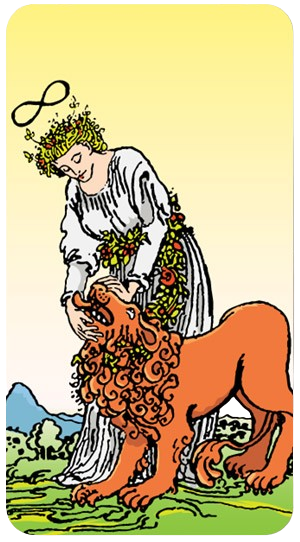
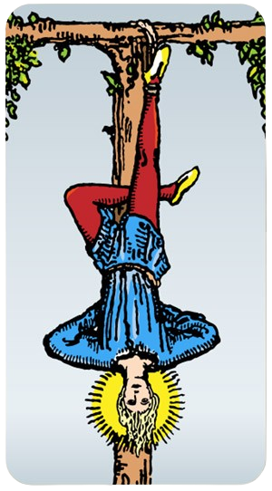
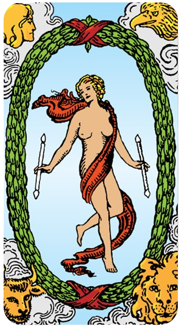

O Louco

O Arcano 0, também conhecido como "O Louco" no tarot, é uma carta extremamente poderosa e cheia de simbolismos. Quando esta carta aparece na tiragem do dia, ela traz consigo mensagens profundas e significativas para aquele momento específico. Vamos explorar o significado desta carta no contexto do tarot diário:
Significado do Arcano 0 - O Louco
O Louco é o arcano que representa novos começos, espontaneidade e a jornada do autoconhecimento. Ele é retratado como uma figura jovial, muitas vezes despreocupada, que se aventura sem medo do desconhecido.
Interpretação na Tiragem do Dia
Novos Começos:
A aparição do Louco indica que o dia está cheio de potencial para novos começos e aventuras. É um convite para abraçar novas oportunidades com mente aberta e coração leve.
Espontaneidade e Liberdade:
Sugere que você deve ser espontâneo e seguir sua intuição. Deixe de lado as preocupações e permita-se explorar caminhos inesperados. A liberdade é a chave.
Riscos Calculados:
O Louco nos lembra que, embora os riscos possam ser necessários, eles devem ser calculados. É um chamado para confiar no processo, mas também para ser consciente das escolhas que você faz.
Confiança no Futuro:
Esta carta encoraja a ter fé no desconhecido e a confiar que tudo se desenrolará conforme planejado. Mesmo que o caminho não seja claro, a jornada em si é valiosa.
Reflexão e Ação
Reflexão: O que você tem evitado por medo de falhar? O que te impede de seguir seus sonhos de forma mais livre e despreocupada?
Ação: Tome hoje como uma oportunidade para dar o primeiro passo em direção a algo novo, mesmo que seja pequeno. Experimente algo fora da sua zona de conforto.
Energia Positiva
O Louco é uma carta vibrante que infunde o dia com energia positiva e uma sensação de renovação. Ele te encoraja a viver o presente, a ser corajoso e a se aventurar sem medo. Se hoje você puxou o Arcano 0, é um sinal claro de que o universo está ao seu lado, prontos para apoiar suas novas jornadas e aventuras.
Que sua jornada com O Louco seja repleta de descobertas e crescimento!
O Mago

O Arcano 1 no tarot é conhecido como O Mago. Esta carta é rica em simbolismo e poder, trazendo uma mensagem de potencial e habilidade. Vamos explorar o significado desta carta quando aparece na tiragem do dia:
Significado do Arcano 1 - O Mago
O Mago representa a manifestação, a ação e o poder de transformar ideias em realidade. Ele é retratado como uma figura confiante, muitas vezes segurando uma vara mágica, com os quatro elementos (terra, ar, fogo e água) à sua disposição.
Interpretação na Tiragem do Dia
Poder de Manifestação:
O Mago indica que você possui todas as ferramentas e habilidades necessárias para realizar seus desejos e alcançar seus objetivos. É um sinal de que você tem o poder de manifestar suas ideias e intenções.
Iniciativa e Ação:
Sugere que hoje é o dia para agir e colocar seus planos em movimento. Não espere passivamente pelas oportunidades; crie-as. Use sua iniciativa e energia para dar o primeiro passo.
Confiança e Habilidade:
O Mago é um lembrete de que você é capaz e talentoso. Confie em suas habilidades e no seu conhecimento. Essa confiança é crucial para superar desafios e alcançar o sucesso.
Criatividade e Inovação:
Esta carta encoraja você a pensar de forma criativa e inovadora. Encontre novas soluções para problemas antigos e explore novas ideias. Seu potencial criativo é uma ferramenta poderosa.
Reflexão e Ação
Reflexão: Quais habilidades e recursos você já possui que podem ajudá-lo a alcançar seus objetivos? Como você pode usar essas habilidades de forma mais eficaz?
Ação: Hoje é o dia para começar algo novo ou avançar em seus projetos. Use suas habilidades e confiança para tomar ações concretas em direção aos seus objetivos.
Energia Positiva
O Mago é uma carta que infunde o dia com energia positiva e proatividade. Ele te encoraja a acreditar em si mesmo e nas suas capacidades. Se hoje você puxou o Arcano 1, é um sinal claro de que você está no controle do seu destino e que pode transformar suas ideias em realidade.
Que sua jornada com O Mago seja repleta de realizações e sucesso!
A Sacerdotisa / A Papisa

O Arcano 2 no tarot é conhecido como A Sacerdotisa. Esta carta é profunda e enigmática, cheia de simbolismo relacionado à intuição, mistério e sabedoria interior. Quando esta carta aparece na tiragem do dia, ela traz mensagens importantes para a reflexão e o autoconhecimento. Vamos explorar o significado desta carta:
Significado do Arcano 2 - A Sacerdotisa
A Sacerdotisa representa o conhecimento oculto, a intuição e o poder feminino. Ela é frequentemente retratada sentada entre dois pilares, segurando um pergaminho e vestida de azul, simbolizando sabedoria e serenidade.
Interpretação na Tiragem do Dia
Intuição e Sabedoria Interior:
A Sacerdotisa sugere que você deve confiar na sua intuição hoje. Sua sabedoria interior será sua melhor guia. É um dia para ouvir sua voz interior e seguir seus instintos.
Mistério e Reflexão:
Esta carta indica que há algo oculto ou desconhecido que precisa ser explorado. Pode ser um convite para refletir profundamente e buscar respostas dentro de si mesmo.
Paciência e Passividade:
A Sacerdotisa sugere que é um dia para ser paciente e observar, ao invés de agir impulsivamente. Às vezes, a ação mais poderosa é a inação e a observação cuidadosa.
Conexão Espiritual:
Hoje é um bom dia para se conectar com sua espiritualidade. Meditação, oração ou qualquer prática espiritual pode ser especialmente benéfica e esclarecedora.
Reflexão e Ação
Reflexão: Quais são as verdades internas que você precisa explorar? Como você pode ouvir melhor sua intuição?
Ação: Reserve um momento para meditar ou refletir em silêncio. Confie nas respostas que surgirem de dentro de você e siga sua intuição ao longo do dia.
Energia Positiva
A Sacerdotisa traz uma energia calma e contemplativa. Ela nos lembra da importância de confiar na nossa sabedoria interior e na intuição. Se hoje você puxou o Arcano 2, é um sinal claro de que você deve se voltar para dentro de si mesmo para encontrar as respostas e a orientação que procura.
Que sua jornada com A Sacerdotisa seja cheia de insights profundos e clareza!
A Imperatriz

O Arcano 3 no tarot é conhecido como A Imperatriz. Esta carta é cheia de simbolismo e representa a feminilidade, abundância, criatividade e natureza. Quando A Imperatriz aparece na tiragem do dia, ela traz mensagens poderosas e positivas para a reflexão e ação. Vamos explorar o significado desta carta:
Significado do Arcano 3 - A Imperatriz
A Imperatriz é uma figura de grande poder feminino e fertilidade. Ela é frequentemente retratada em um ambiente natural, cercada por abundância e crescimento, simbolizando sua conexão com a Terra e a natureza. Ela é a personificação da criação e nutrição.
Interpretação na Tiragem do Dia
Feminilidade e Nutrição:
A Imperatriz sugere que hoje é um dia para nutrir a si mesmo e aos outros. Esteja em contato com sua energia feminina, que é compassiva, acolhedora e carinhosa.
Abundância e Prosperidade:
Esta carta indica que você está rodeado de abundância e que é um bom momento para prosperidade. Aproveite as oportunidades que surgem e celebre a riqueza que você tem, seja material ou espiritual.
Criatividade e Expressão:
A Imperatriz encoraja você a expressar sua criatividade. Dedique tempo para suas paixões artísticas e permita-se criar livremente. Hoje é um dia para iniciar novos projetos criativos.
Conexão com a Natureza:
Passe algum tempo ao ar livre, conectando-se com a natureza. Este contato pode renovar sua energia e proporcionar uma sensação de equilíbrio e harmonia.
Reflexão e Ação
Reflexão: Como você pode nutrir e cuidar melhor de si mesmo e dos outros? Onde você pode encontrar mais abundância em sua vida?
Ação: Dedique um tempo hoje para cuidar de si mesmo ou fazer algo criativo. Talvez passe um tempo ao ar livre, apreciando a beleza da natureza ao seu redor.
Energia Positiva
A Imperatriz traz uma energia de nutrição, crescimento e abundância. Ela nos lembra da importância de cuidar de nós mesmos e dos outros, e de celebrar a fertilidade e criatividade em nossas vidas. Se hoje você puxou o Arcano 3, é um sinal claro de que você está em um momento de grande potencial criativo e prosperidade.
Que sua jornada com A Imperatriz seja cheia de amor, crescimento e criatividade!
O Imperador

O Arcano 4 no tarot é conhecido como O Imperador. Esta carta simboliza autoridade, estrutura, liderança e estabilidade. Quando O Imperador aparece na tiragem do dia, ele traz mensagens importantes sobre disciplina, controle e o uso adequado do poder. Vamos explorar o significado desta carta:
Significado do Arcano 4 - O Imperador
O Imperador é uma figura de autoridade e poder. Ele é frequentemente retratado sentado em um trono, segurando um cetro ou uma esfera, simbolizando seu domínio e controle. A figura do Imperador é associada à ordem e à autoridade patriarcal.
Interpretação na Tiragem do Dia
Liderança e Autoridade:
O Imperador sugere que hoje é um dia para assumir um papel de liderança. Seja confiante em suas decisões e exerça sua autoridade com sabedoria.
Estrutura e Disciplina:
Esta carta indica a importância da estrutura e da organização. É um bom momento para colocar suas coisas em ordem, criar planos sólidos e seguir uma rotina disciplinada.
Poder e Controle:
O Imperador representa o uso do poder de maneira justa e equilibrada. Hoje, você pode ser chamado a exercer controle sobre uma situação ou a tomar decisões importantes que exigem firmeza e clareza.
Estabilidade e Segurança:
Esta carta também traz uma sensação de estabilidade e segurança. Pode indicar que você está em uma posição estável ou que está trabalhando para criar uma base sólida para o futuro.
Reflexão e Ação
Reflexão: Onde você pode exercer mais liderança em sua vida? Como pode criar mais estrutura e disciplina em suas rotinas diárias?
Ação: Tome hoje como uma oportunidade para organizar seus planos e metas. Seja firme e confiante em suas decisões e ações, e trabalhe para criar estabilidade em sua vida.
Energia Positiva
O Imperador traz uma energia de força, estabilidade e controle. Ele nos lembra da importância de assumir a responsabilidade por nossas ações e de usar nosso poder de maneira justa e eficaz. Se hoje você puxou o Arcano 4, é um sinal claro de que você está em uma posição de força e que pode fazer grandes progressos com disciplina e liderança.
Que sua jornada com O Imperador seja cheia de força, clareza e sucesso!
O Papa / O Hierofante

O Arcano 5 no tarot é conhecido como O Hierofante. Esta carta é rica em simbolismo e está associada à sabedoria, tradições e orientação espiritual. Quando O Hierofante aparece na tiragem do dia, ele traz mensagens importantes sobre aprendizado, conformidade e a busca por conhecimento profundo. Vamos explorar o significado desta carta:
Significado do Arcano 5 - O Papa / O Hierofante
O Hierofante representa autoridade espiritual e sabedoria institucional. Ele é frequentemente retratado como uma figura religiosa ou um professor, sentado entre dois pilares, simbolizando seu papel como mediador entre o divino e o humano. Ele também é conhecido por suas conexões com tradições e rituais estabelecidos.
Interpretação na Tiragem do Dia
Orientação Espiritual e Sabedoria:
O Hierofante sugere que hoje é um dia para buscar orientação espiritual ou conselhos de alguém sábio. Isso pode ser um mentor, professor ou uma figura espiritual em sua vida.
Tradições e Rituais:
Esta carta indica a importância de respeitar as tradições e rituais que guiam sua vida. Pode ser um bom momento para se reconectar com práticas antigas ou seguir rituais que trazem conforto e significado.
Aprendizado e Educação:
O Hierofante também simboliza o aprendizado formal e a educação. Hoje pode ser um bom dia para buscar conhecimento, seja através de estudos, leitura ou participação em cursos ou workshops.
Conformidade e Estrutura:
Esta carta também traz a mensagem de conformidade e estrutura. Sugere que você siga as regras e normas estabelecidas, reconhecendo a sabedoria e a razão por trás delas.
Reflexão e Ação
Reflexão: Onde você pode buscar mais orientação e sabedoria em sua vida? Como as tradições e os rituais podem trazer mais significado e estrutura para o seu dia?
Ação: Dedique um tempo hoje para aprender algo novo ou participar de um ritual ou prática espiritual que lhe traga paz e clareza. Busque conselhos de alguém experiente se estiver enfrentando decisões difíceis.
Energia Positiva
O Hierofante traz uma energia de sabedoria, orientação e conexão com a tradição. Ele nos lembra da importância de buscar conhecimento profundo e de respeitar as tradições que moldam nossas vidas. Se hoje você puxou o Arcano 5, é um sinal claro de que você pode encontrar força e clareza através do aprendizado e da orientação espiritual.
Que sua jornada com O Hierofante seja cheia de sabedoria e crescimento espiritual!
Os Enamorados / Os Amantes

O Arcano 6 no tarot é conhecido como Os Amantes. Esta carta é cheia de simbolismo e está associada a escolhas, relacionamentos e harmonia. Quando Os Amantes aparecem na tiragem do dia, eles trazem mensagens importantes sobre amor, união e decisões significativas. Vamos explorar o significado desta carta:
Significado do Arcano 6 - Os Enamorados / Os Amantes
Os Amantes representam o amor, a parceria e as decisões que envolvem valores pessoais. Eles são frequentemente retratados como um casal em um cenário harmonioso, muitas vezes com um anjo ou uma figura celestial acima deles, simbolizando a benção e a proteção divina.
Interpretação na Tiragem do Dia
Amor e Relacionamentos:
Os Amantes sugerem que o amor e os relacionamentos são o foco do dia. Pode ser um momento para fortalecer laços afetivos, resolver conflitos ou celebrar a união com alguém especial.
Escolhas e Decisões:
Esta carta indica que você pode enfrentar decisões importantes hoje, especialmente aquelas que envolvem valores e questões morais. É um convite para escolher com o coração e considerar as consequências das suas escolhas.
Harmonia e União:
Os Amantes também representam a harmonia e a união. Hoje é um bom dia para buscar equilíbrio e entendimento nos relacionamentos, seja pessoal ou profissional.
Conexão Espiritual:
A presença dos Amantes pode sugerir uma conexão espiritual mais profunda com outra pessoa ou com você mesmo. É um convite para explorar o que realmente importa para você em termos de amor e relacionamentos.
Reflexão e Ação
Reflexão: Quais são as escolhas importantes que você precisa fazer hoje? Como você pode fortalecer e nutrir seus relacionamentos?
Ação: Dedique tempo para estar com alguém que você ama ou para refletir sobre seus valores e prioridades. Tome decisões importantes com base no que realmente importa para você.
Energia Positiva
Os Amantes trazem uma energia de amor, união e decisões significativas. Eles nos lembram da importância de seguir o coração e de valorizar os relacionamentos que nos cercam. Se hoje você puxou o Arcano 6, é um sinal claro de que o amor e as escolhas importantes estão no centro do seu dia.
Que sua jornada com Os Amantes seja cheia de amor, harmonia e decisões sábias!
O Carro

O Arcano 7 no tarot é conhecido como O Carro. Esta carta está associada ao triunfo, direção, força de vontade e avanço. Quando O Carro aparece na tiragem do dia, ele traz mensagens importantes sobre controle, determinação e progresso. Vamos explorar o significado desta carta:
Significado do Arcano 7 - O Carro
O Carro é uma figura poderosa, frequentemente retratada em uma carruagem puxada por esfinges ou cavalos, simbolizando a dualidade e a necessidade de equilibrar forças opostas para alcançar o sucesso. Ele é um símbolo de movimento e conquista.
Interpretação na Tiragem do Dia
Determinação e Força de Vontade:
O Carro indica que hoje é um dia para exercer sua determinação e força de vontade. Enfrente desafios de frente e use sua energia para superar obstáculos.
Controle e Direção:
Esta carta sugere que é importante tomar as rédeas da sua vida e direcionar seus esforços de maneira focada. Assuma o controle das situações e mantenha-se firme em seus objetivos.
Progresso e Movimento:
O Carro simboliza avanço e progresso. Hoje é um bom dia para fazer movimentos significativos em direção aos seus objetivos. É um sinal de que você está no caminho certo e que seu esforço será recompensado.
Triunfo e Sucesso:
Esta carta também é um presságio de triunfo e sucesso. Com perseverança e controle, você pode alcançar grandes conquistas e celebrar suas vitórias.
Reflexão e Ação
Reflexão: Quais são os objetivos que você deseja alcançar? Como você pode usar sua determinação e força de vontade para superar os desafios de hoje?
Ação: Tome medidas concretas para avançar em direção aos seus objetivos. Mantenha o foco e a determinação, e não se deixe abater por obstáculos.
Energia Positiva
O Carro traz uma energia de movimento, progresso e triunfo. Ele nos lembra da importância de tomar controle de nossa vida e dirigir nossos esforços com determinação e foco. Se hoje você puxou o Arcano 7, é um sinal claro de que você está em uma posição forte para alcançar o sucesso e avançar em direção aos seus objetivos.
Que sua jornada com O Carro seja cheia de conquistas e progresso!
A Força

O Arcano 8 no tarot é conhecido como A Força. Esta carta simboliza coragem, compaixão, domínio sobre os instintos e a força interior. Quando A Força aparece na tiragem do dia, ela traz mensagens importantes sobre controle emocional, perseverança e a capacidade de superar desafios. Vamos explorar o significado desta carta:
Significado do Arcano 8 - A Força
A Força é representada por uma mulher serenamente controlando um leão, o que simboliza o domínio sobre os instintos primitivos e a força bruta. Esta carta é um poderoso lembrete de que a verdadeira força vem de dentro, combinando coragem com compaixão.
Interpretação na Tiragem do Dia
Força Interior e Coragem:
A Força sugere que hoje é um dia para reconhecer e utilizar sua força interior. Enfrente os desafios com coragem e confiança, sabendo que você tem a capacidade de superar quaisquer obstáculos.
Domínio e Controle Emocional:
Esta carta indica a importância de manter o controle sobre suas emoções. Use a compaixão e a paciência para lidar com situações difíceis, em vez de reagir impulsivamente.
Perseverança e Determinação:
A Força simboliza a perseverança e a determinação. Continue firme no seu caminho, mesmo que enfrente dificuldades. Sua capacidade de persistir será recompensada.
Compaixão e Gentileza:
A Força também nos lembra da importância da compaixão e da gentileza, não apenas com os outros, mas também consigo mesmo. Seja gentil ao se deparar com suas próprias fraquezas e dificuldades.
Reflexão e Ação
Reflexão: Onde você precisa exercer mais controle emocional e coragem em sua vida? Como a compaixão e a gentileza podem fortalecer sua capacidade de enfrentar desafios?
Ação: Enfrente os desafios do dia com uma atitude de coragem e compaixão. Seja perseverante e use sua força interior para superar obstáculos.
Energia Positiva
A Força traz uma energia de coragem, domínio e compaixão. Ela nos lembra da importância de enfrentar os desafios com confiança e de usar nossa força interior para manter o equilíbrio e o controle. Se hoje você puxou o Arcano 8, é um sinal claro de que você tem a capacidade de lidar com qualquer situação que surgir.
Que sua jornada com A Força seja cheia de coragem, perseverança e compaixão!
O Eremita

O Arcano 9 no tarot é conhecido como O Eremita. Esta carta simboliza introspecção, sabedoria interior, busca por conhecimento e reflexão. Quando O Eremita aparece na tiragem do dia, ele traz mensagens importantes sobre a necessidade de se voltar para dentro, buscar respostas internas e valorizar momentos de solitude. Vamos explorar o significado desta carta:
Significado do Arcano 9 - O Eremita
O Eremita é uma figura solitária, frequentemente retratada segurando uma lanterna, que simboliza a iluminação interior e a busca pela verdade. Ele representa a sabedoria adquirida através da reflexão e do tempo passado em solitude.
Interpretação na Tiragem do Dia
Introspecção e Reflexão:
O Eremita sugere que hoje é um dia para introspecção. Reserve um tempo para refletir sobre suas escolhas, objetivos e o caminho que está trilhando. A sabedoria interior será sua guia.
Busca por Conhecimento:
Esta carta indica que você pode estar em uma jornada de busca por conhecimento ou verdade. Seja através de estudos, meditação ou contemplação, o dia é favorável para explorar novas áreas de aprendizado.
Sabedoria Interior:
O Eremita nos lembra que a verdadeira sabedoria vem de dentro. Confie na sua intuição e nas lições que a vida lhe ensinou. Use esse conhecimento para guiar suas decisões e ações.
Solitude e Paz Interior:
A presença do Eremita sugere a importância de momentos de solitude para encontrar paz interior. Desconecte-se das distrações externas e conecte-se consigo mesmo.
Reflexão e Ação
Reflexão: Quais são as questões em sua vida que precisam de introspecção e reflexão? Como você pode buscar mais conhecimento e sabedoria interior?
Ação: Dedique tempo para meditar, refletir ou estudar algo que desperte seu interesse. Encontre um espaço tranquilo onde possa se conectar com seus pensamentos e sentimentos mais profundos.
Energia Positiva
O Eremita traz uma energia de sabedoria, introspecção e iluminação interior. Ele nos lembra da importância de buscar respostas dentro de nós mesmos e valorizar momentos de solitude. Se hoje você puxou o Arcano 9, é um sinal claro de que você está em um momento propício para a reflexão e o crescimento pessoal.
Que sua jornada com O Eremita seja cheia de sabedoria e clareza!
A Roda da Fortuna

O Arcano 10 no tarot é conhecido como A Roda da Fortuna. Esta carta está associada ao destino, ciclos de vida, mudanças e sorte. Quando A Roda da Fortuna aparece na tiragem do dia, ela traz mensagens importantes sobre a impermanência e a natureza cíclica da vida. Vamos explorar o significado desta carta:
Significado do Arcano 10 - A Roda da Fortuna
A Roda da Fortuna é uma carta dinâmica que simboliza os altos e baixos da vida. Ela é frequentemente retratada com uma roda girando, muitas vezes com figuras ascendendo e descendendo, simbolizando a natureza mutável da sorte e do destino.
Interpretação na Tiragem do Dia
Mudança e Ciclos:
A Roda da Fortuna sugere que hoje é um dia de mudanças. Pode haver uma mudança significativa em sua vida ou um ciclo que está se completando. Esteja preparado para a transição e aceite as novas circunstâncias.
Destino e Sorte:
Esta carta indica que as forças do destino estão em ação. Eventos podem parecer fora do seu controle, mas confie que tudo está se desenrolando como deveria. A sorte pode estar a seu favor.
Aceitação e Adaptação:
A Roda da Fortuna nos lembra da importância de aceitar a impermanência e se adaptar às mudanças. A vida é uma série de ciclos, e a habilidade de se ajustar a essas flutuações é crucial.
Oportunidades:
Com a mudança, vêm novas oportunidades. Fique atento às portas que se abrem e esteja pronto para aproveitar as chances que surgirem. A roda está girando, trazendo novas possibilidades.
Reflexão e Ação
Reflexão: Quais mudanças ou ciclos você está experimentando em sua vida? Como você pode aceitar e se adaptar melhor a essas mudanças?
Ação: Abrace as mudanças e esteja aberto a novas oportunidades. Confie no processo e permita que a roda do destino gire, trazendo o que for necessário para o seu crescimento e evolução.
Energia Positiva
A Roda da Fortuna traz uma energia de movimento, mudança e novas possibilidades. Ela nos lembra da importância de abraçar as mudanças e confiar no fluxo da vida. Se hoje você puxou o Arcano 10, é um sinal claro de que mudanças significativas podem estar a caminho, trazendo novas oportunidades e lições valiosas.
Que sua jornada com A Roda da Fortuna seja cheia de aceitação e novas descobertas!
A Justiça

O Arcano 11 no tarot é conhecido como A Justiça. Esta carta simboliza equilíbrio, verdade, responsabilidade e justiça. Quando A Justiça aparece na tiragem do dia, ela traz mensagens importantes sobre a necessidade de honestidade, imparcialidade e tomada de decisões justas. Vamos explorar o significado desta carta:
Significado do Arcano 11 - A Justiça
A Justiça é frequentemente retratada segurando uma balança, que simboliza o equilíbrio e a equidade, e uma espada, que representa a verdade e a responsabilidade. Esta carta é um lembrete de que nossas ações têm consequências e que a verdade e a justiça devem sempre prevalecer.
Interpretação na Tiragem do Dia
Equilíbrio e Harmonia:
A Justiça sugere que hoje é um dia para buscar o equilíbrio em suas ações e decisões. É importante considerar todas as facetas de uma situação e agir de maneira justa e equilibrada.
Verdade e Honestidade:
Esta carta indica a necessidade de ser honesto consigo mesmo e com os outros. A verdade deve ser sua guia, e a transparência nas comunicações é essencial.
Responsabilidade e Justiça:
A Justiça nos lembra que somos responsáveis por nossas ações e que devemos agir de maneira justa. Hoje pode ser um bom momento para resolver conflitos ou tomar decisões que exigem uma abordagem justa e imparcial.
Consequências:
Esta carta também sugere que as ações passadas estão começando a mostrar suas consequências. Pode ser um dia para enfrentar os resultados de decisões anteriores e aprender com elas.
Reflexão e Ação
Reflexão: Quais áreas da sua vida precisam de mais equilíbrio e justiça? Como você pode ser mais honesto e transparente em suas interações?
Ação: Tome decisões ponderadas e justas hoje. Seja honesto e claro em suas comunicações e procure resolver qualquer conflito com uma abordagem equilibrada e justa.
Energia Positiva
A Justiça traz uma energia de equilíbrio, verdade e responsabilidade. Ela nos lembra da importância de agir com integridade e de buscar a harmonia em todas as áreas de nossa vida. Se hoje você puxou o Arcano 11, é um sinal claro de que a verdade e a justiça devem ser seus guias.
Que sua jornada com A Justiça seja cheia de clareza, equilíbrio e decisões sábias!
O Enforcado / O Pendurado

O Arcano 12 no tarot é conhecido como O Enforcado. Esta carta é rica em simbolismo e está associada à suspensão, sacrifício, perspectiva e transformação. Quando O Enforcado aparece na tiragem do dia, ele traz mensagens importantes sobre a necessidade de pausa, reflexão e a possibilidade de ver as coisas de uma nova perspectiva. Vamos explorar o significado desta carta:
Significado do Arcano 12 - O Enforcado
O Enforcado é frequentemente retratado pendurado de cabeça para baixo, geralmente por um pé, com uma expressão serena no rosto. Essa imagem simboliza uma mudança de perspectiva e a aceitação do sacrifício necessário para alcançar novos entendimentos e transformações.
Interpretação na Tiragem do Dia
Pausa e Reflexão:
O Enforcado sugere que hoje é um dia para pausar e refletir. Em vez de avançar rapidamente, é importante dar um passo para trás, observar e reconsiderar suas ações e decisões.
Mudança de Perspectiva:
Esta carta indica a necessidade de ver as coisas de uma nova perspectiva. Pode ser um convite para olhar para uma situação de maneira diferente, encontrar soluções alternativas ou entender melhor o ponto de vista dos outros.
Sacrifício e Deixar Ir:
O Enforcado também representa sacrifício e a necessidade de deixar ir algo para avançar. Isso pode envolver abrir mão de velhos padrões, comportamentos ou até mesmo certezas, para permitir o crescimento e a transformação.
Transformação e Iluminação:
Esta carta sugere que a pausa e a mudança de perspectiva podem levar a uma profunda transformação e iluminação. É um momento para se abrir para novas ideias e caminhos que podem não ter sido considerados antes.
Reflexão e Ação
Reflexão: O que em sua vida precisa de uma nova perspectiva? Onde você pode estar segurando algo que precisa ser deixado ir?
Ação: Reserve um tempo hoje para meditar ou refletir sobre suas situações atuais. Tente ver as coisas de um ângulo diferente e esteja disposto a fazer os sacrifícios necessários para o seu crescimento e bem-estar.
Energia Positiva
O Enforcado traz uma energia de reflexão, paciência e transformação. Ele nos lembra da importância de pausar, reconsiderar nossas percepções e estar abertos à mudança. Se hoje você puxou o Arcano 12, é um sinal claro de que você está em um momento propício para reflexão profunda e mudança positiva.
Que sua jornada com O Enforcado seja cheia de novas perspectivas e transformações significativas!
A Morte

O Arcano 13 no tarot é conhecido como A Morte. Esta carta é frequentemente mal compreendida devido ao seu nome, mas seu simbolismo é profundo e está associado a transformação, renascimento e novos começos. Quando A Morte aparece na tiragem do dia, ela traz mensagens importantes sobre o fim de um ciclo e o início de outro. Vamos explorar o significado desta carta:
Significado do Arcano 13 - A Morte
A Morte é frequentemente retratada como um esqueleto em uma armadura, muitas vezes montado em um cavalo, carregando uma bandeira negra com uma rosa branca. Esta imagem simboliza a inevitabilidade da mudança e a transformação que segue o fim de algo.
Interpretação na Tiragem do Dia
Transformação e Renascimento:
A Morte indica que hoje é um dia de transformação. Algo em sua vida pode estar chegando ao fim, preparando o caminho para um novo começo. Este é um momento de renascimento e renovação.
Deixar Ir e Liberar:
Esta carta sugere a necessidade de deixar ir o que não lhe serve mais. Pode ser um hábito, uma relação, ou qualquer outra coisa que esteja impedindo seu crescimento. Ao liberar o velho, você abre espaço para o novo.
Mudança Inevitável:
A Morte lembra que a mudança é uma parte inevitável da vida. Aceitar e abraçar essas mudanças pode ser a chave para um crescimento pessoal significativo.
Crescimento e Evolução:
A presença da Morte indica que através do fim de um ciclo, você pode evoluir e crescer de maneiras que não imaginava possíveis. Este é um tempo para abraçar a mudança e buscar oportunidades de crescimento.
Reflexão e Ação
Reflexão: O que em sua vida precisa ser liberado para que você possa crescer e evoluir? Como você pode abraçar as mudanças que estão por vir?
Ação: Tome tempo hoje para refletir sobre o que precisa terminar ou ser transformado em sua vida. Liberte-se do que não lhe serve mais e acolha o novo com esperança e abertura.
Energia Positiva
A Morte traz uma energia de transformação, renovação e novos começos. Ela nos lembra que, embora o fim de algo possa ser difícil, ele é muitas vezes necessário para o crescimento e a evolução. Se hoje você puxou o Arcano 13, é um sinal claro de que mudanças significativas estão a caminho, trazendo novas oportunidades e transformações positivas.
Que sua jornada com A Morte seja cheia de renovação e crescimento pessoal!
A Temperança

O Arcano 14 no tarot é conhecido como A Temperança. Esta carta simboliza equilíbrio, moderação, harmonia e paciência. Quando A Temperança aparece na tiragem do dia, ela traz mensagens importantes sobre a necessidade de encontrar um meio-termo, praticar a moderação e cultivar a paz interior. Vamos explorar o significado desta carta:
Significado do Arcano 14 - A Temperança
A Temperança é frequentemente retratada como uma figura angelical vertendo líquido de um cálice para outro, simbolizando a alquimia, a mistura de elementos e o equilíbrio. Esta carta é um lembrete da importância de manter a harmonia em nossas vidas.
Interpretação na Tiragem do Dia
Equilíbrio e Moderação:
A Temperança sugere que hoje é um dia para buscar o equilíbrio em todas as áreas da sua vida. Seja moderado em suas ações, emoções e decisões, evitando excessos e extremismos.
Harmonia e Paz Interior:
Esta carta indica a importância de cultivar a paz interior e a harmonia. Encontre momentos de tranquilidade e serenidade para recarregar suas energias e manter o equilíbrio emocional.
Paciência e Tempo Divino:
A Temperança nos lembra que a paciência é uma virtude. Nem tudo acontece no nosso tempo, e às vezes é necessário confiar no tempo divino e deixar que as coisas se desenrolem naturalmente.
Cooperação e Alquimia:
Esta carta simboliza a cooperação e a mistura harmoniosa de diferentes elementos. Trabalhe em colaboração com os outros e busque soluções que tragam benefícios mútuos.
Reflexão e Ação
Reflexão: Quais áreas da sua vida precisam de mais equilíbrio e moderação? Como você pode cultivar a paz interior e a harmonia?
Ação: Pratique a moderação em suas ações e decisões hoje. Encontre momentos de tranquilidade para meditar ou refletir, e trabalhe em colaboração com os outros para alcançar resultados harmoniosos.
Energia Positiva
A Temperança traz uma energia de equilíbrio, harmonia e paciência. Ela nos lembra da importância de manter a moderação e de buscar a paz interior em nossas vidas. Se hoje você puxou o Arcano 14, é um sinal claro de que você está em um momento propício para cultivar a harmonia e o equilíbrio.
Que sua jornada com A Temperança seja cheia de serenidade e harmonia!
O Diabo

O Arcano 15 no tarot é conhecido como O Diabo. Esta carta está associada ao materialismo, tentação, apego e ilusões. Quando O Diabo aparece na tiragem do dia, ele traz mensagens importantes sobre os desafios que podem estar presentes, especialmente aqueles relacionados à obsessão, vícios e falsas crenças. Vamos explorar o significado desta carta:
Significado do Arcano 15 - O Diabo
O Diabo é frequentemente retratado como uma figura sinistra, com chifres e asas, controlando figuras acorrentadas. Esta imagem simboliza a escravidão aos desejos materiais e as ilusões que nos prendem.
Interpretação na Tiragem do Dia
Materialismo e Apego:
O Diabo sugere que hoje pode ser um dia em que você está excessivamente focado em ganhos materiais ou prazeres sensoriais. É um alerta para revisar suas prioridades e verificar se não está sendo consumido pelo materialismo.
Tentação e Vícios:
Esta carta indica que você pode enfrentar tentações ou lutas contra vícios. É um convite para reconhecer esses desafios e buscar maneiras de superá-los.
Ilusões e Falsas Crenças:
O Diabo simboliza as ilusões e falsas crenças que podem estar mantendo você preso. Avalie se há algo em sua vida que parece bom na superfície, mas que na verdade está causando dano ou limitação.
Liberdade e Autoconhecimento:
Reconhecer as influências do Diabo pode ser o primeiro passo para se libertar delas. Use este dia para refletir sobre onde você pode estar permitindo que essas influências tomem conta e como pode trabalhar para se libertar.
Reflexão e Ação
Reflexão: Quais áreas da sua vida estão sendo dominadas por desejos materiais ou tentações? Como você pode identificar e desafiar essas influências?
Ação: Tome medidas conscientes para afastar-se de vícios ou comportamentos prejudiciais. Busque ajuda e apoio se necessário, e trabalhe para fortalecer sua força de vontade e clareza mental.
Energia Positiva
O Diabo traz uma energia que pode ser desafiadora, mas também serve como um lembrete poderoso da importância do autoconhecimento e da liberdade. Ele nos lembra que temos o poder de reconhecer e superar as ilusões e influências negativas em nossas vidas. Se hoje você puxou o Arcano 15, é um sinal claro de que este é um momento para enfrentar esses desafios de frente e buscar a verdadeira liberdade e clareza.
Que sua jornada com O Diabo seja cheia de autoconhecimento e transformação positiva!
A Torre

O Arcano 16 no tarot é conhecido como A Torre. Esta carta é poderosa e está associada a mudanças abruptas, rupturas e revelações inesperadas. Quando A Torre aparece na tiragem do dia, ela traz mensagens importantes sobre a necessidade de adaptação, resiliência e renovação. Vamos explorar o significado desta carta:
Significado do Arcano 16 - A Torre
A Torre é frequentemente retratada como uma torre sendo atingida por um raio, com figuras caindo de suas alturas. Esta imagem simboliza a destruição repentina e a necessidade de reconstrução, destacando as estruturas frágeis que não podem suportar a pressão da verdade e da mudança.
Interpretação na Tiragem do Dia
Mudança Abrupta e Ruptura:
A Torre sugere que hoje pode ser um dia de mudanças abruptas e rupturas. Algo que parecia estável pode ser derrubado repentinamente, forçando você a reavaliar e reconstruir.
Revelações e Verdade:
Esta carta indica que verdades ocultas podem ser reveladas, levando a uma compreensão mais profunda. As ilusões são destruídas, e a realidade vem à tona, por mais difícil que possa ser aceitar inicialmente.
Adaptação e Resiliência:
A Torre nos lembra da importância de adaptação e resiliência. Embora a mudança possa ser desconfortável, ela oferece a oportunidade de crescimento e renovação. É um convite para se adaptar às novas circunstâncias e encontrar uma nova base.
Liberdade e Renovação:
A destruição simbolizada pela Torre também pode ser libertadora. Ela permite que você se livre de estruturas e crenças limitantes, abrindo espaço para a verdadeira renovação e crescimento pessoal.
Reflexão e Ação
Reflexão: Quais são as áreas da sua vida que precisam ser reavaliadas e reconstruídas? Como você pode lidar com as mudanças e revelações de maneira resiliente?
Ação: Enfrente as mudanças de hoje com coragem e abertura. Use as revelações como uma oportunidade para crescer e encontrar uma base mais sólida e autêntica.
Energia Positiva
A Torre traz uma energia de transformação radical e renovação. Embora possa ser uma carta desafiadora, ela nos lembra que a mudança é necessária para o crescimento e que a destruição das ilusões pode levar a uma fundação mais sólida. Se hoje você puxou o Arcano 16, é um sinal claro de que mudanças significativas estão a caminho, trazendo a oportunidade de reconstruir de maneira mais forte e autêntica.
Que sua jornada com A Torre seja cheia de revelações e crescimento transformador!
A Estrela

O Arcano 17 no tarot é conhecido como A Estrela. Esta carta simboliza esperança, inspiração, renovação e serenidade. Quando A Estrela aparece na tiragem do dia, ela traz mensagens de otimismo, cura e um renovado senso de propósito. Vamos explorar o significado desta carta:
Significado do Arcano 17 - A Estrela
A Estrela é frequentemente retratada como uma figura feminina nua, ajoelhada junto a um corpo d'água, derramando água de dois jarros, simbolizando a fluidez e a conexão entre o espírito e a matéria. Acima dela, uma grande estrela brilha intensamente, cercada por sete estrelas menores, representando o cosmos e a inspiração divina.
Interpretação na Tiragem do Dia
Esperança e Otimismo:
A Estrela sugere que hoje é um dia para cultivar esperança e otimismo. Mesmo diante de desafios, mantenha a fé em um futuro melhor e acredite que coisas boas estão a caminho.
Inspiração e Criatividade:
Esta carta indica um influxo de inspiração e criatividade. É um excelente momento para explorar novas ideias e projetos criativos, deixando-se guiar pela intuição e pela imaginação.
Renovação e Cura:
A Estrela simboliza a cura e a renovação. Pode ser um dia propício para cuidar de si mesmo, tanto física quanto emocionalmente, e para se reconectar com sua essência mais profunda.
Serenidade e Paz:
Esta carta traz uma energia de serenidade e tranquilidade. Reserve um tempo para meditar ou simplesmente apreciar a beleza ao seu redor, encontrando paz e equilíbrio no presente momento.
Reflexão e Ação
Reflexão: O que traz esperança e inspiração para sua vida? Como você pode cultivar esses sentimentos e usá-los para guiar suas ações?
Ação: Dedique-se a atividades que renovem sua energia e tragam alegria. Seja criativo, cuide de si mesmo e permita-se sonhar com um futuro brilhante.
Energia Positiva
A Estrela traz uma energia de esperança, renovação e serenidade. Ela nos lembra da importância de manter a fé e o otimismo, mesmo em tempos difíceis. Se hoje você puxou o Arcano 17, é um sinal claro de que você está em um momento propício para a cura, a inspiração e a realização de sonhos.
Que sua jornada com A Estrela seja cheia de luz, esperança e renovação!
A Lua

O Arcano 18 no tarot é conhecido como A Lua. Esta carta está repleta de simbolismo e está associada à intuição, ao inconsciente, aos mistérios e às ilusões. Quando A Lua aparece na tiragem do dia, ela traz mensagens sobre a importância de confiar na intuição, enfrentar medos internos e navegar através das incertezas. Vamos explorar o significado desta carta:
Significado do Arcano 18 - A Lua
A Lua é frequentemente retratada com uma grande lua cheia iluminando a noite, acompanhada por um lobo e um cão uivando, além de um caminho sinuoso que leva a duas torres. Esta imagem evoca o reino dos sonhos, da intuição e dos mistérios ocultos.
Interpretação na Tiragem do Dia
Intuição e Subconsciente:
A Lua sugere que hoje é um dia para prestar atenção à sua intuição e aos sinais do seu subconsciente. Seus sonhos e instintos podem revelar verdades ocultas e fornecer orientação.
Mistérios e Ilusões:
Esta carta indica que nem tudo é o que parece. Pode haver ilusões ou mal-entendidos que precisam ser desvendados. Esteja atento para não ser enganado por aparências ou falsas promessas.
Enfrentar Medos e Inseguranças:
A Lua simboliza medos internos e inseguranças que podem surgir à superfície. É um convite para enfrentar esses medos e trabalhar através das incertezas com coragem e honestidade.
Navegar na Incerteza:
Esta carta sugere que você pode estar navegando por águas turvas e incertas. Mantenha-se confiante e permita que sua intuição o guie através das dúvidas e confusões.
Reflexão e Ação
Reflexão: Quais são os medos ou inseguranças que você precisa enfrentar? Como sua intuição pode ajudá-lo a navegar por situações incertas?
Ação: Dedique tempo para meditar ou refletir sobre seus sonhos e instintos. Confie em sua intuição e procure clareza nas áreas da sua vida que parecem nebulosas ou confusas.
Energia Positiva
A Lua traz uma energia de mistério, intuição e exploração do inconsciente. Ela nos lembra da importância de prestar atenção aos sinais internos e de enfrentar nossos medos com coragem. Se hoje você puxou o Arcano 18, é um sinal claro de que você deve confiar em sua intuição e estar atento às ilusões e mistérios ao seu redor.
Que sua jornada com A Lua seja cheia de descobertas e clareza interior!
O Sol

O Arcano 19 no tarot é conhecido como O Sol. Esta carta é uma das mais positivas do baralho, simbolizando alegria, sucesso, vitalidade e clareza. Quando O Sol aparece na tiragem do dia, ele traz mensagens de felicidade, realização e clareza mental. Vamos explorar o significado desta carta:
Significado do Arcano 19 - O Sol
O Sol é frequentemente retratado como um sol radiante no céu, muitas vezes com uma criança feliz cavalgando um cavalo branco em um campo de girassóis. Esta imagem simboliza a vitalidade, a clareza e a alegria que vem da verdade e do sucesso.
Interpretação na Tiragem do Dia
Alegria e Felicidade:
O Sol sugere que hoje é um dia para celebrar a alegria e a felicidade. É um dia para aproveitar os momentos bons, sentir gratidão e compartilhar sua luz com os outros.
Sucesso e Realização:
Esta carta indica que você pode alcançar sucesso e realização em seus esforços. Projetos e planos têm grandes chances de prosperar, trazendo um sentimento de conquista e satisfação.
Vitalidade e Energia:
O Sol traz uma energia renovadora e vitalidade. Você pode sentir um aumento na sua energia física e mental, o que lhe permitirá enfrentar tarefas com entusiasmo e eficácia.
Clareza e Iluminação:
Esta carta simboliza clareza e iluminação. Questões confusas ou incertas podem se tornar claras, e você pode encontrar soluções fáceis para problemas que estavam dificultando sua jornada.
Reflexão e Ação
Reflexão: Quais são as áreas da sua vida que trazem mais alegria e satisfação? Como você pode compartilhar essa felicidade com os outros?
Ação: Aproveite o dia para celebrar suas conquistas e se dedicar a atividades que tragam alegria e vitalidade. Use esta energia positiva para impulsionar seus projetos e objetivos.
Energia Positiva
O Sol traz uma energia de alegria, sucesso e clareza. Ele nos lembra da importância de celebrar a vida, buscar o sucesso e aproveitar a vitalidade que sentimos. Se hoje você puxou o Arcano 19, é um sinal claro de que você está em um momento de grande realização e felicidade.
Que sua jornada com O Sol seja cheia de alegria, sucesso e clareza!
O Julgamento

O Arcano 20 no tarot é conhecido como O Julgamento. Esta carta está associada à renovação, despertar, introspecção e decisões importantes. Quando O Julgamento aparece na tiragem do dia, ele traz mensagens sobre avaliação pessoal, renovação e um chamado para a ação. Vamos explorar o significado desta carta:
Significado do Arcano 20 - O Julgamento
O Julgamento é frequentemente retratado com figuras emergindo de túmulos ao som de uma trombeta, tocada por um anjo. Esta imagem simboliza o despertar espiritual, a redenção e a reavaliação das próprias ações e escolhas.
Interpretação na Tiragem do Dia
Renovação e Despertar:
O Julgamento sugere que hoje é um dia de renovação e despertar. Pode ser um momento de reflexão profunda, onde você percebe novas verdades sobre si mesmo e sua vida.
Avaliação e Decisões Importantes:
Esta carta indica que é um bom momento para avaliar suas ações e decisões passadas. Reflita sobre o que funcionou e o que não funcionou, e use esse entendimento para tomar decisões importantes e bem-informadas.
Chamado para a Ação:
O Julgamento pode representar um chamado para a ação. Você pode sentir a necessidade de fazer mudanças significativas ou de seguir um novo caminho que está se revelando para você.
Libertação e Perdão:
Esta carta simboliza a libertação do passado e a busca pelo perdão, tanto para si mesmo quanto para os outros. É um convite para deixar para trás o que não lhe serve mais e abraçar um novo começo.
Reflexão e Ação
Reflexão: Quais são as áreas da sua vida que precisam de renovação e mudança? Como você pode avaliar suas ações e decisões passadas para fazer escolhas mais conscientes no futuro?
Ação: Tome hoje como uma oportunidade para fazer uma reavaliação profunda de sua vida. Ouça o chamado para a ação e esteja disposto a fazer as mudanças necessárias para um novo começo.
Energia Positiva
O Julgamento traz uma energia de renovação, clareza e ação. Ele nos lembra da importância de reavaliar nossas vidas, de buscar o perdão e a redenção, e de seguir em frente com um novo propósito. Se hoje você puxou o Arcano 20, é um sinal claro de que você está em um momento propício para grandes revelações e mudanças significativas.
Que sua jornada com O Julgamento seja cheia de clareza, renovação e ação positiva!
O Mundo

O Arcano 21 no tarot é conhecido como O Mundo. Esta carta é extremamente positiva e está associada à realização, conclusão, integridade e sucesso. Quando O Mundo aparece na tiragem do dia, ele traz mensagens de culminação, completude e novos começos. Vamos explorar o significado desta carta:
Significado do Arcano 21 - O Mundo
O Mundo é frequentemente retratado com uma figura central, geralmente uma mulher, envolta por uma coroa de louros ou um círculo, simbolizando a completude e a perfeição. Em torno dela, há símbolos dos quatro elementos ou dos quatro evangelistas, representando o equilíbrio e a harmonia entre as forças cósmicas.
Interpretação na Tiragem do Dia
Realização e Sucesso:
O Mundo sugere que hoje é um dia de realização e sucesso. Pode ser um momento de culminação de esforços anteriores, onde você vê seus projetos alcançando um final satisfatório e recompensador.
Conclusão e Completude:
Esta carta indica que um ciclo está se fechando, trazendo um senso de completude e integridade. Pode ser o final de um projeto, uma fase da vida ou a obtenção de um grande objetivo.
Harmonia e Equilíbrio:
O Mundo simboliza a harmonia e o equilíbrio entre todas as áreas da vida. É um convite para celebrar a integração e a totalidade, reconhecendo a perfeição do momento presente.
Novos Começos:
Com a conclusão de um ciclo, O Mundo também abre portas para novos começos. É um lembrete de que cada final é também um início, cheio de novas oportunidades e possibilidades.
Reflexão e Ação
Reflexão: Quais são as áreas da sua vida onde você se sente realizado e completo? Como você pode celebrar suas conquistas e se preparar para novos começos?
Ação: Celebre suas realizações e reconheça o trabalho duro que o levou até aqui. Esteja aberto para novos desafios e oportunidades que surgirem em seu caminho.
Energia Positiva
O Mundo traz uma energia de realização, completude e novos começos. Ele nos lembra da importância de celebrar nossos sucessos e de estar abertos às novas possibilidades que surgem com o final de um ciclo. Se hoje você puxou o Arcano 21, é um sinal claro de que você está em um momento de grande realização e pronto para abraçar novas jornadas.
Que sua jornada com O Mundo seja cheia de sucesso, harmonia e novos começos brilhantes!